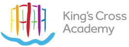
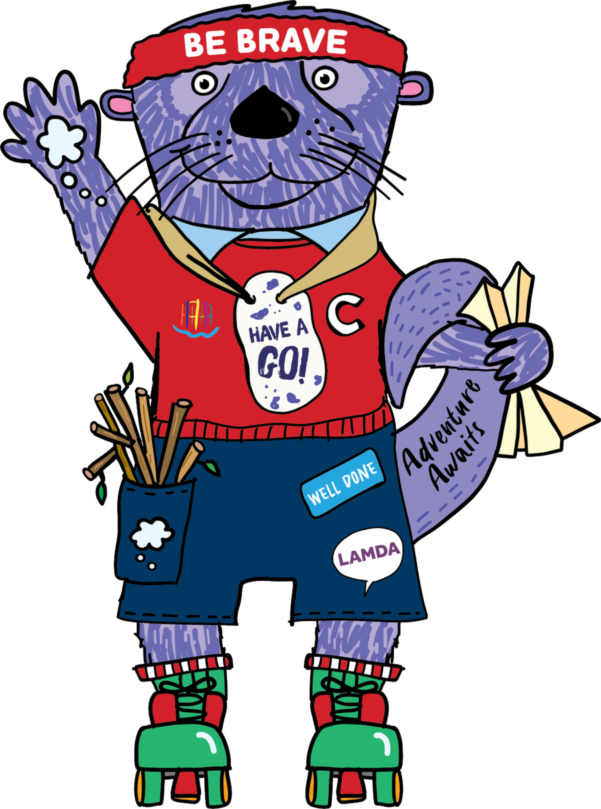
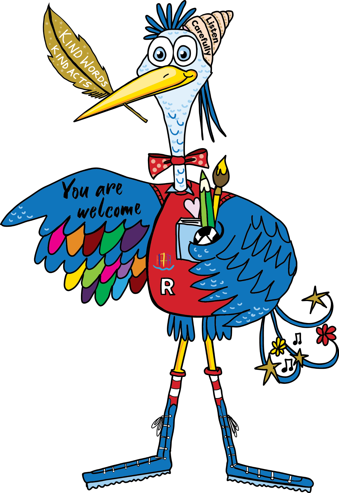
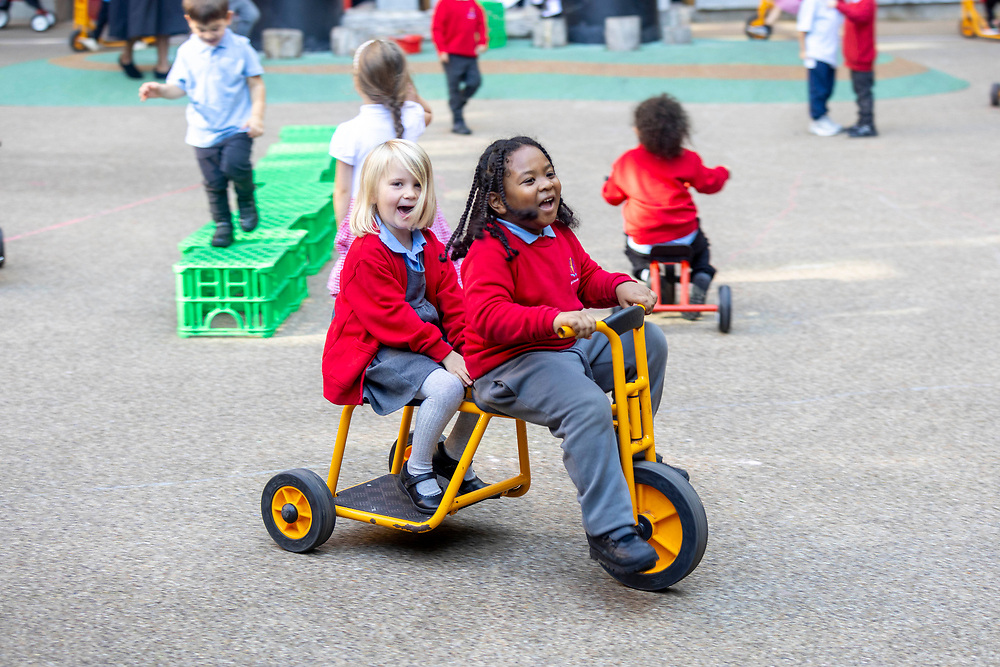

What will I learn?
An ambitious, connected curriculum that builds knowledge and brings learning to life.

Book a tour
Discover King's Cross Academy
A values-led nursery and primary school where children are known, nurtured and challenged — in the heart of one of London's most exciting communities.
Growing up at KCA
A child may arrive with us at three and leave at eleven. In those years, we want them to acquire powerful knowledge, discover their strengths, find their voice and develop the confidence and character to thrive at secondary school and beyond.
An ambitious, connected curriculum that builds knowledge and brings learning to life.
A deliberately planned personal development journey, shaped by six values from Nursery to Year 6.
Strong foundations, high expectations and outcomes that show the impact of learning over time.

What will your child learn?
Our approach to learning is distinctive, challenging and rigorous. We want every child to develop the knowledge, understanding, skills and attitudes needed for high-quality learning.
Learning is organised so children make meaningful connections. They explore significant people, events, ideas and issues; ask thoughtful questions; consider evidence; listen to others and develop informed viewpoints.
Each project begins with an initial experience designed to spark curiosity and culminates in a learning presentation, giving children an authentic audience for what they have learned.
Explore our complete curriculum →More than a postcode
Our location changes what is possible. Children grow up alongside world-leading arts, science, technology and community organisations. Partnerships with Frank Barnes School for Deaf Children, Central Saint Martins, the Francis Crick Institute, Google UK and others broaden horizons, enrich learning and raise aspirations.
Explore some of the places and experiences that bring learning to life.
Swipe through the neighbourhood
Arts Week culminates in a gallery exhibition where children share ambitious creative work with families and the wider community.
Children perform Songs Under the Tree, sharing music with families, visitors and the local King's Cross community.
Voyage into Maps supports children's study of journeys, mapping and the world around them.
A canal and water study brings the curriculum's Big Question about how water brings people together into the local area.
Practical science experiences connect pupils with world-leading research on the school's doorstep.
Sharing our campus creates a distinctive inclusive community, with BSL woven into children's early KCA experience.
Who will your child become?
Our six values are not decoration. They shape our curriculum, relationships and expectations — giving children a shared language for the person they are becoming.




A journey, not a checklist
From Nursery to Year 6, experiences, responsibilities and opportunities are deliberately sequenced. Children learn what the values mean, recognise them in action and increasingly demonstrate them independently in school and beyond.

What will they experience?
Performance, music, BSL, art, sport, play, leadership, visits, residentials and partnerships are not add-ons. They are part of how children learn, develop character and discover what they can do.
Sharing our building with Frank Barnes School for Deaf Children creates a particularly special community, including opportunities for KCA pupils to learn British Sign Language.
How will we know they are thriving?
We are proud of the achievements of our pupils and equally clear about where we are still improving. Our latest picture shows strong early foundations, outstanding phonics, improving multiplication outcomes and developing strength in reading and writing at Key Stage 2.
Children leave Reception well prepared for learning, with outcomes above local and national expectations.
Year 1 outcomes have been significantly higher than local and national figures for two consecutive years.
Multiplication outcomes continue to improve year on year.
Reading and writing have shown substantial improvement, while strengthening maths remains a clear school priority.
Always moving forward
We are ambitious about what KCA can become as well as proud of what it is today. Hear from our Headteacher about our current school improvement priorities.
Don't just take our word for it
This section is designed to bring together the voices that help tell KCA's story — parents, pupils, external reports, accreditations and partners.
“I love the ethos of KCA, they really put my child at the centre of everything they do. They develop the whole child — academically, socially and emotionally.”KCA Parent
External report / accreditation quoteAdd strongest evidence here
Pupil or partner voiceAdd a second perspective here

Every child belongs
KCA is a highly diverse school community. We follow a Learning without Limits philosophy: ability is not fixed, barriers should be overcome and every child should participate and achieve in school life.
Our motto, Love Learning Together, reflects a simple belief: children flourish when pupils, families, staff and the wider community work in partnership.

Nursery → Year 6 → beyond
The best way to understand King's Cross Academy is to experience it. Come and meet our children, see learning in action and discover our community for yourself.